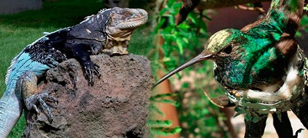

La fauna en Honduras es riquísima y variada siendo los más comunes los de vida arbórea y los que viven en las corrientes fluviales aguas lacustres.
Los animales grandes no son muy numerosos pero hay cientos de especies de reptiles, anfibios y pájaros; lagartos y muchas variedades de peces en las corrientes. Monos, murciélagos y miríadas de pájaros abundan en los árboles.
Guacamayo rojo
El guacamayo rojo o guacamaya macao (Ara macao) es un ave de unos 96 centímetros de longitud que ostenta variados colores, predominando el rojo, el azul y el amarillo. Habita en lugares húmedos como bosques y zonas tropicales. Le gusta alimentarse de frutas y semillas como el girasol, aunque también consume flores, algunos insectos, tallos de plantas y hojas. La guacamaya es un animal gregario que se reúne en grupos de varias decenas de ejemplares y forma parejas de por vida.
Se encuentra en peligro de extinción en Hondura debido a la destrucción de su hábitat y Al hurto de sus crías para la venta ilegal en el mercado negro. Además, el cambio climático también ha contribuido a la merma de la especie.
Los animales grandes no son muy numerosos pero hay cientos de especies de reptiles, anfibios y pájaros; lagartos y muchas variedades de peces en las corrientes. Monos, murciélagos y miríadas de pájaros abundan en los árboles.

Otros reptiles son las iguanas que se mimetizan con los tonos variados del bosque; las tortugas de agua dulce como la caguama (Caretta caretta).
Anfibios
Entre los anfibios son abundantes los sapos y las ranas trepadoras de variadas especies.

Las costas de Honduras, se encuentran bañadas al norte y este por el mar Caribe y en el sur por el golfo de Fonseca, en las aguas turquesas próximas al mar Caribe se puede apreciar mediante buceo los arrecifes coralinos con su diversidad de algas calcáreas, algas rojas, (Rhodophyta), como praderas marinas, entre otras plantas acuáticas que abordan un natural ecosistema.
Entre la fauna que podemos encontrar en las costas hondureñas, están el Tiburón ballena, delfines, variedad de peces tropicales, camarones (Caridea) y muchas especies más



Biodiversidad de Honduras